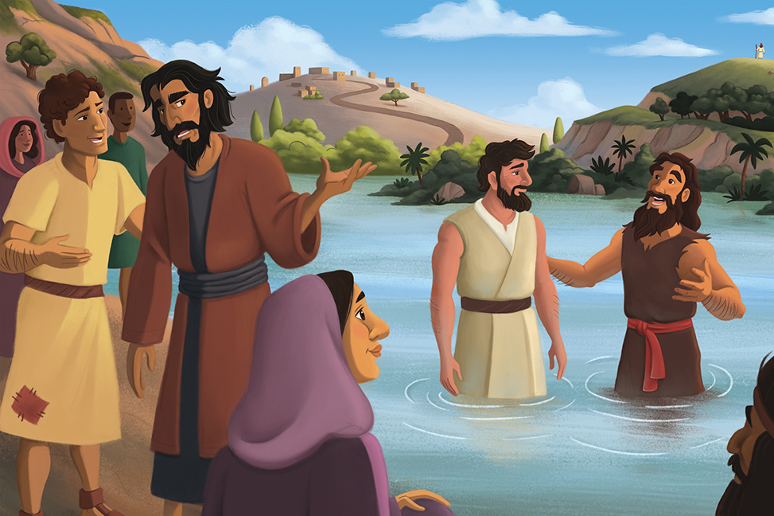

1
Who did John point people to?
Jesus.
Who did John want people to believe in?

The Gospel Project: Kids · John Pointed to Jesus
The lesson picture shows John, Jesus, and people together by the water.
The picture is an illustration from the Ministry Grid lesson page.
The lesson overview says John wanted people to believe in Jesus as the Messiah.
Summary from the Ministry Grid session overview.
John wanted people to know who Jesus is and believe in Him.
Wording follows the lesson overview; no Bible reference was visible there.
The lesson overview connects believing in Jesus with receiving eternal life.
Summary from the Ministry Grid session overview.
The overview says people who believe in Jesus can point others to believe in Him too.
Summary from the Ministry Grid session overview.
We can share that we believe Jesus is the Messiah and invite someone to learn about Him.
The sharing example is a teaching suggestion based on the overview.
John pointed people to believe in Jesus. People who believe can point others to Him too.
The official Big Picture answer and key passage reference were not visible in the accessible overview.
Tap a question to reveal a short answer cue.
Answer cues follow the visible Ministry Grid lesson overview.
God, thank You for Jesus, the Messiah. Help us believe in Him and share with others that we can trust Him too. Thank You for the eternal life You give to those who believe. Amen.
A short prayer based on the lesson overview's message.